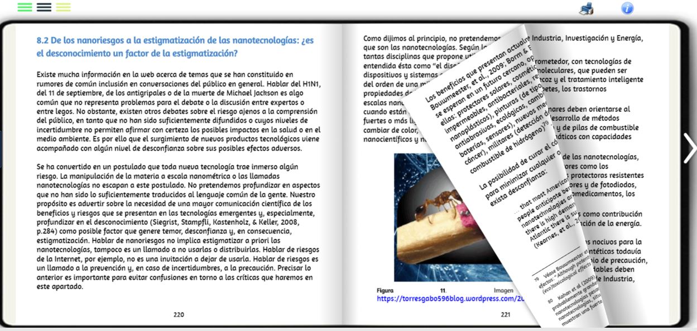
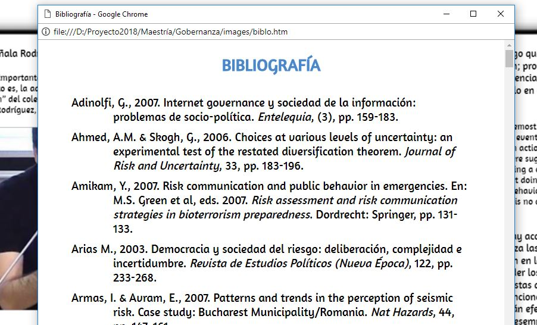
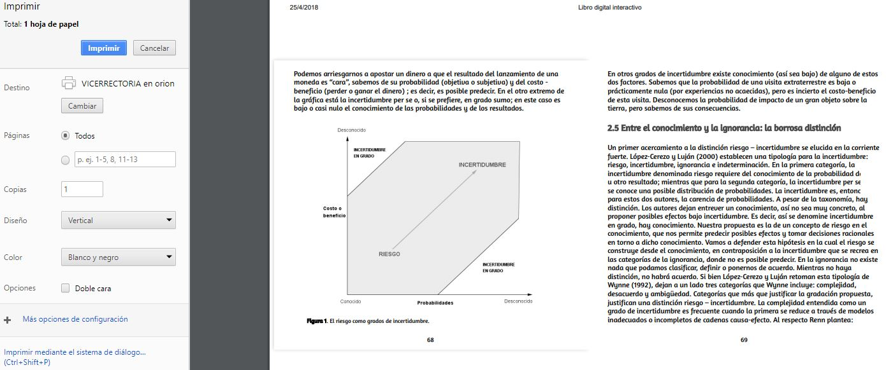

Acceso a la tabla de contenido
Algunos aspectos a tener en cuenta en este libro digital interactivo.
Navegación. Para pasar de una hoja a otra se dispone de varias alternativas: i) haciendo clic en las flechas de los extremos, ii) haciendo clic en las esquinas de cada página, iii) arrastrando la página desde una de sus esquinas, iv) haciendo clic al interior de una página y luego usando las flechas del teclado, v) desde la tabla de contenido. Cuando una página tenga una escena interactiva, no se recomienda el uso del arrastre de la página.

Arrastre de página con clic sostenido
Tabla de contenido. Se puede acceder a la tabla de contenido haciendo clic en los botones ubicados en la esquina superior izquierda del libro.
Acceso a la tabla de contenido
Bibliografía. Dado el gran número de referencias bibliográficas, en la barra de herramientas hemos incluido una opción para abrir la bibliografía, de tal forma que se pueda consultar sin retirarse de la página del libro que se está leyendo.

Acceso a la tabla de contenido
Impresora. Se ha dispuesto de un acceso rápido a la impresora que, para el navegador Chrome, está configurada en orientación horizontal y ajuste automático. Para otros navegadores, se recomienda usar las propiedades de la impresora para ajustar el contenido a imprimir, el cual corresponde a las páginas mostradas en la pantalla, incluyendo el contenido de las escenas interactivas.

Vista previa en Chrome
Ventanas emergentes. Algunas ventanas emergentes han sido necesarias, para ampliar imágenes, escenas interactivas o para mostrar información adicional.
Escenas interactivas. La interactividad del libro se logra a través de escenas como la que se presenta a continuación:
Las escenas contenidas en el libro, pueden tardar algunos segundos en cargar, por lo que se recomienda esperar, antes de interactuar con ellas.
Escenas Descartes. Todas las escenashan sido diseñadas o actualizadas con el nuevo editor DescartesJS.

Navegador. El libro ha sido probado en los siguientes navegadores: Firefox, Chrome, Opera, Edge y Safari. Se recomienda el uso de Chrome. No se recomienda Explorer.